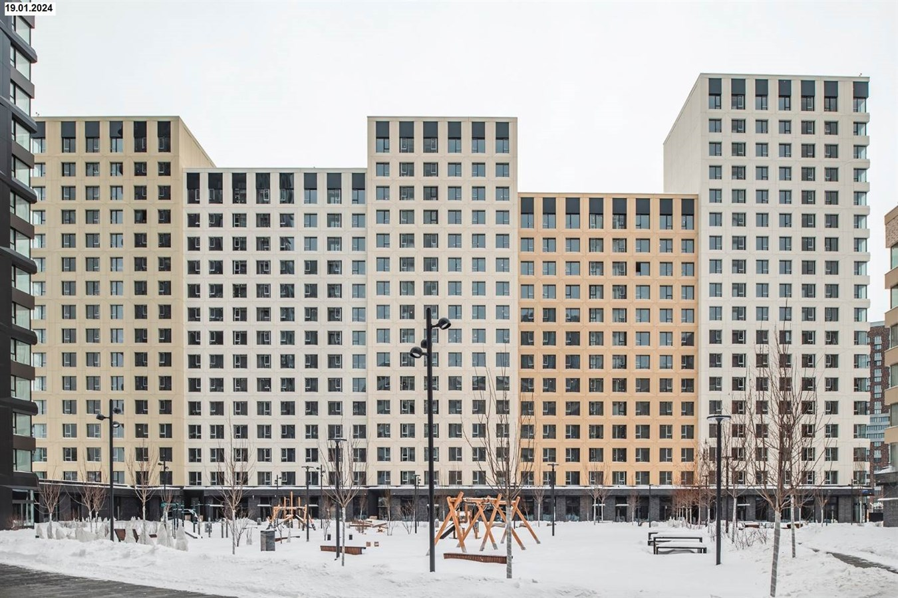
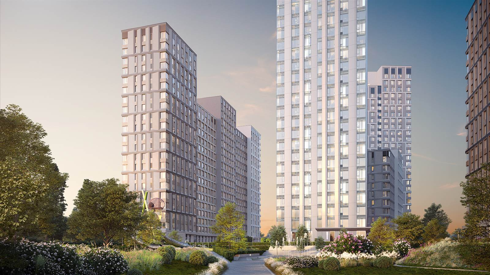
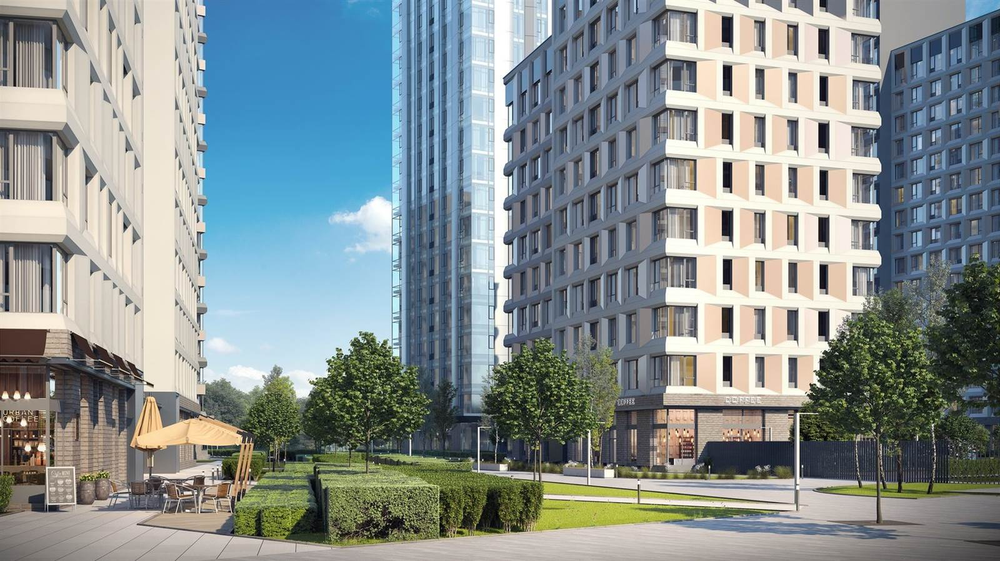

ЖК ALIA в Покровском-Стрешнево: цены, планировки и покупка у метро Спартак
Обновлено: 28 апреля 2026

ALIA — проект бизнес-класса в Покровском-Стрешнево (СЗАО), рядом с метро «Спартак». Локация на ул. Летной, близость к реке и спортивной инфраструктуре района формируют понятный коммерческий спрос: здесь выбирают как квартиры для жизни, так и ликвидные форматы под инвестиционный сценарий. Ниже — практический разбор по ценам, планировкам, срокам и пошаговой схеме безопасной покупки.
Ключевые параметры
- Название: ЖК ALIA
- Район: Москва, СЗАО, Покровское-Стрешнево
- Адрес: ул. Летная, 95Б
- Застройщик: ASTERUS
- Класс: бизнес
- Метро: Спартак, около 5 минут пешком
- Сроки: сданные этапы и ввод до 2 кв. 2028
- Тип дома: монолитный
- Корпуса: 41
- Лоты в актуальной подборке: 122
- Площади: 26–169 м²
- Отделка: черновая, подготовка под чистовую
- Оплата: ипотека
Цены и планировки
По текущей выборке в проекте зафиксирован диапазон от 17,0 млн ₽ до 99,4 млн ₽. Стоимость за м² зависит от корпуса, видовых параметров, этажа и формата квартиры. В среднем по доступным лотам ориентир находится в коридоре ~471–930 тыс. ₽/м².
| Тип | Площадь | Цена от | Лотов |
|---|---|---|---|
| Студия | 26–90 м² | от 17,0 млн ₽ | 9 |
| 1-комн | 34–66 м² | от 20,6 млн ₽ | 52 |
| 2-комн | 49–74 м² | от 28,0 млн ₽ | 38 |
| 3-комн | 74–169 м² | от 44,2 млн ₽ | 18 |
| 4+ комн | 103–113 м² | от 67,1 млн ₽ | 5 |
Для коммерческого решения важно считать не только стартовую цену, но и полный бюджет сделки: регистрация, возможные доработки после приемки, ставка и платеж по ипотеке, резерв на 6–12 месяцев. Именно эта модель позволяет избежать кассового разрыва и выбрать лот без лишней спешки.
О жилом комплексе
ALIA позиционируется как городской проект с акцентом на современный образ жизни: закрытые дворы, подземный паркинг, зоны спорта и отдыха, детские площадки и озелененные пространства. Для части корпусов реализованы форматы с видами на воду и городскую панораму. По концепции района предусмотрен формат «двор без машин», что повышает комфорт семейного сценария проживания.
Плюс проекта — широкий продуктовый диапазон: от компактных студий до просторных квартир семейного формата. Это формирует более устойчивую ликвидность в перепродаже и аренде, чем в проектах с узкой типологией лотов.


Инфраструктура и транспорт
Транспортный якорь проекта — станция метро «Спартак» в пешей доступности. По автомобильной логистике район связан с магистральными направлениями северо-запада Москвы. Для покупателей это дает понятный ежедневный маршрут и поддерживает долгосрочную ликвидность объекта.
Район Покровское-Стрешнево сочетает жилую среду с рекреационными зонами и спортивной инфраструктурой. Перед выходом в сделку рекомендуем сделать практический тест маршрута в часы пик (утро/вечер) и сверить реальное время в пути с личным сценарием жизни.
Корпуса и сроки сдачи
| Корпус | Очередь | Срок сдачи | Технология |
|---|---|---|---|
| Корпуса проекта (сводно, 41) | Поэтапно | Сдан - 2 кв. 2028 | Монолитный |
| Детализация по корпусам | Уточняется | Уточняется | Уточняется |
Кому подходит / Кому может не подойти
Кому подходит
- Покупателям, кто ищет бизнес-класс у метро в Москве с сильной локацией.
- Семьям, для которых важна среда, благоустройство и сценарий «двор без машин».
- Инвесторам, которые считают ликвидность по лоту, а не только по рекламной цене.
Кому может не подойти
- Тем, кто ищет минимальный бюджет входа в новостройку.
- Покупателям без финансового резерва на сопутствующие расходы после сделки.
- Тем, кому нужен полностью готовый ремонт под немедленное заселение.
Риски при покупке и как их снять
- Недооценка полного бюджета. Считайте итоговую стоимость владения, а не только цену лота.
- Слабая проверка договора. Важно сверять сроки передачи, условия приемки и финансовые пункты.
- Выбор неликвидной планировки. Оценивайте спрос на аналогичные форматы в районе.
- Ошибки в ипотечной модели. Считайте платеж в базовом и стресс-сценарии.
- Покупка без сравнения альтернатив. Сопоставьте минимум 3-5 вариантов в одном бюджете.
Пошагово: как купить квартиру в этом ЖК
- Определите цель покупки: проживание, аренда, долгосрочное владение.
- Зафиксируйте бюджет: взнос, платеж, резерв.
- Соберите shortlist из 3-5 лотов ALIA под ваш сценарий.
- Проверьте юридические и финансовые параметры сделки до аванса.
- Сверьте транспортный маршрут и окружение на месте.
- Согласуйте схему оплаты (ипотека/комбинированный платеж).
- Выйдите в сделку с контролем документов и сроков передачи.
FAQ
Какая минимальная цена квартиры в ЖК ALIA?
По текущей подборке — от 17 млн ₽.
Сколько квартир доступно в проекте?
В актуальной выборке — 122 лота, при этом число планировок в базе шире.
Какая площадь квартир в ЖК ALIA?
Диапазон по доступным форматам: от 26 до 169 м².
Где находится проект и сколько идти до метро?
Москва, Покровское-Стрешнево, ул. Летная, 95Б. До метро «Спартак» около 5 минут пешком.
Какие варианты отделки заявлены?
Черновая отделка и подготовка под чистовую отделку.
До какого срока заявлены этапы сдачи?
Сданные этапы и ввод следующих очередей до 2 квартала 2028 года.
Можно ли купить квартиру в ипотеку?
Да, ипотечная схема доступна. Конкретные условия зависят от банка и параметров выбранного лота.
CTA: нужна персональная подборка по ЖК ALIA?
Подберем лоты под ваш бюджет, рассчитаем полную финансовую модель, проверим документы и сопроводим сделку до подписания и передачи квартиры.
Телефон: +7 985 761-48-85
Telegram: @AlexSavushkin